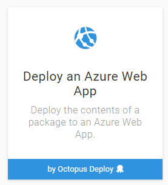
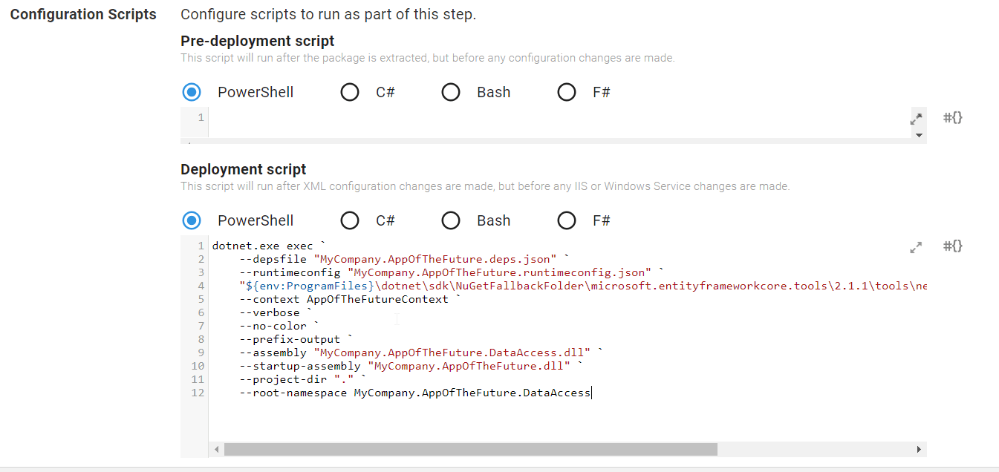

Ca vous est déjà arrivé de déployer en prod une nouvelle version de votre application et d'oublier de passer la migration EF à la mano ? Eh ben moi aussi. On se retrouve alors à executer le script sql de migration en urgence, en espérant que tout se passera bien. Bref, c'est la panique à bord!
Histoire de ne plus revivre cette situation inconfortable, on est tenté d'avoir recours à la migration EF par le code. Ainsi, on est certains qu'a chaque exécution de notre app, la migration sera effectuée si le schéma de la BDD n'est pas à jour. Le problème, c'est que si la migration se passe mal, on se retrouve à nouveau avec une application plantée en production → retour à la case départ.
Et si on pouvait appliquer la migration EF par le code, mais pendant le déploiement. Après tout, avec la cli dotnet, il est tout à fait possible d'exécuter une migration. Alors pourquoi ne pas le faire à travers un script powershell durant le deploy ? Si vous utilisez Octopus comme chez Younited Credit, alors c'est possible !
Migration avec la dotnet cli
Supposons que vous ayez découpé classiquement votre application en couche de manière à avoir votre startup project et votre DAL séparés, par exemple :
- MyCompany.AppOfTheFuture : application console en .NET Core
- MyCompany.AppOfTheFuture.DAL : Votre Data Access Layer, celle qui contient vos repositories Entity Framework, votre DbContext et votre code de migration
Afin d'exécuter une migration avec la cli .NET Core, on peut utiliser la commande suivante depuis PowerShell :
dotnet.exe exec `
--depsfile "MyCompany.AppOfTheFuture.deps.json" `
--runtimeconfig "MyCompany.AppOfTheFuture.runtimeconfig.json" `
"${env:ProgramFiles}\dotnet\sdk\NuGetFallbackFolder\microsoft.entityframeworkcore.tools\2.1.1\tools\netcoreapp2.0\any\ef.dll" database update `
--context AppOfTheFutureContext `
--verbose `
--no-color `
--prefix-output `
--assembly "MyCompany.AppOfTheFuture.DataAccess.dll" `
--startup-assembly "MyCompany.AppOfTheFuture.dll" `
--project-dir "." `
--root-namespace MyCompany.AppOfTheFuture.DataAccess
La ressource ef.dll peut être considérée comme l'équivalent de migrate.exe pour EF6. C'est la dedans que se trouve le code qui sera exécuté pour appliquer la migration en base de donnée. Il est important de renseigner le chemin correct de la DLL selon la version de .Net core que vous avez installé.
Les paramètres importants de la commande sont :
ef.dll database update: définit le type d'opération à appliquer sur la BDD. Parmis les options possibles, il existe également la commandecreateafin d'initialiser une BDD.--context AppOfTheFutureContextDéfinit la classe de contexte EF--assembly "MyCompany.AppOfTheFuture.DataAccess.dll"Définit le nom de l'assembly contenant la classe contexte--startup-assembly "MyCompany.AppOfTheFuture.dll"Définit le nom de votre startup project. En outre, il s'agira vraisemblablement du projet où se trouve votreappsettings.jsonet la chaîne de connexion à la BDD.
A la suite de l'exécution de cette commande, si tout s'est bien passé, votre BDD doit être à jour et aligné sur la dernière migration.
Intégration de la migration dans Octopus
Maintenant que nous savons jouer une migration en CLI, la migration depuis Octopus n'est plus très compliquée à mettre en place. En effet, il suffit de jouer un bout de script PowerShell pendant la tâche de déploiement et c'est joué !
A titre d'exemple, on va se baser sur le déploiement d'une webapp Azure et donc du template Octopus Deploy an Azure Web App :

Dans ce template, il est possible de renseigner un script PowerShell à exécuter en Pre-Deploy/Deploy/Post-Deploy. On va s'intéresser à la mise en place du script pendant le deploy. Si on le fait trop tôt, on ne pourra pas profiter de la valorisation des variables dans notre appsettings.json.
Il nous suffit juste de recopier la ligne de commande précédemment mentionnée dans la section Features / Configuration Scripts et c'est tout bon :

L'intérêt de cette approche est de mettre en évidence un problème de base de données rapidement, et surtout avant que votre webapp soit en ligne. Fail Fast! Dans notre cas, si la migration échoue dans Octopus, alors ce dernier ne poursuivra pas le déploiement.
Auteurs
Cet article a été rédigé avec mon ami et collègue Anthony Hocquet. Vous le retrouverez sur son nouveau blog que je vous incite à suivre tant les futurs articles sont prometteurs !